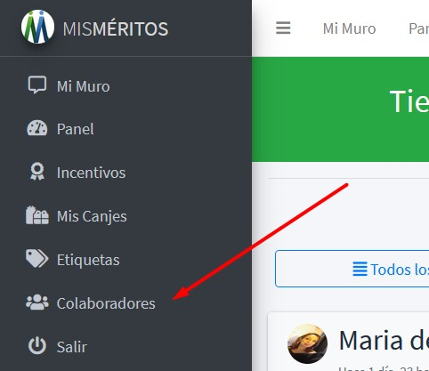

Guía del Usuario Colaborador¶
En esta sección veremos las opciones y navegación, asi como las actividades que puede desarrollar un Usuario Colaborador en la aplicación de Mis Méritos
Registro de un nuevo usuario¶
Para realizar tu Registro de usuario sigue los pasos dados a continuación:
Ingresa a la URL de Mis Méritos en tu navegador.
En la pantalla de Login selecciona la Opción «¿Eres Nuevo? Regístrate».
{kind=link}
Llena los campos solicitados, teniendo en cuenta que el Nick de usuario es un nombre corto para identificarte, y que tu clave no sea tan común. La contraseña debe digitarse dos veces igual.
{kind=link}
Importante
la clave o contraseña no puede asemejarse tanto a su otra información personal. Debe contener al menos 8 caracteres. No puede ser una clave utilizada comunmente. No puede ser completamente numérica.
Si el registro se realizo corrrectamente aparecerá un mensaje confirmando la creación de nuevo usuario y el sistema te ingresará automaticamente a la aplicación por primera vez.
Ingresar a Mis Meritos¶
Si ya tienes un usuario registrado, podrás ingresar a la aplicación realizando los siguientes pasos:
Ingresa a la URL de Mis Méritos en tu navegador.
Aparecerá la pantalla de Login.
{kind=link}
Ingresa tus credenciales para iniciar, usuario y contraseña. Si tienes algun problem digitando tu contraseña puedes ver como la digitas usando el botón del ojito para hacerla visible.
{kind=link}
Presiona el botón «Ingresar» para iniciar la sesión.
Una vez hallas ingresado, el sistema te dará un mensaje de bienvenida «Usuario Logueado correctamente!».
Recuperando una contraseña “Olvide mi Clave”¶
Si olvidaste tu contraseña no te preocupes, puedes reestablecerla, siguiendo estos pasos:
Haz click en el enlace “Olvide mi Clave” de la pantalla de Login.
Ingresa tu Email y presiona el botón «Enviar».
{kind=link}
El sistema te mostrará esta pantalla de instrucciones.
{kind=link}
Recibirás un correo con un enlace para restablecer la contraseña de tu cuenta.
Lee atentamente el correo y haz click en el enlace recibo.
Este enlace te llevar a una formulario en donde debes ingresar tu nueva contrasseña dos veces.
{kind=link}
Presiona el botón “Cambiar Contraseña”.
Desde ahora ya puedes ingresar con tu usuario y tu nueva contraseña.
Importante
Si existe el Email que ingresaste. Deberás recibir en él las instrucciones respectivas en un momento. Si no recibes un correo electrónico con las instrucciones, asegúrate de haber ingresado bien el Email con el cual te registraste, y revisa tu carpeta de Spam, pudo haber llegado ahí.
Gestión de Perfil de usuario¶
Una vez hallas ingresado correctamente al aplicativo, podrás completar los datos de tu Perfil de usuario. Para ello sigue los pasos dados a continuación:
Actualizar tus Datos¶
Haz click en la flechita ubicada en parte superior derecha, en donde aparece el indicador del usuario logueado.
Se abrirá un menu desplegable, selecciona la opción Mi Perfil.
Aparece esta pantalla con los datos de tu Perfil.
Completa la información que haga falta, como: Nombres, Apellidos, Género, Tus Funciones en la empresa, Teléfono donde ubicarte, la fecha de nacimiento y el área a la cual perteneces.
En el campo Foto haz clic el botón Browse… para buscar la imagen que será usada como tu Avatar.
Importante
La imagen selecionada como foto de perfil o avatar debe ser de 200 x 200 pixeles de formato cuadrado y de extension .jpg .png .gif
Una vez completada la información, presiona el botón “Actualizar Mis Datos”.
Cambiar la Contraseña¶
Desde tu perfil de usuario podrás cambiar tu contraseña. Para ello sigue los pasos dados a continuación:
Haz click en la flechita ubicada en parte superior derecha, en donde aparece el indicador del usuario logueado.
Se abrirá un menu desplegable, selecciona la opción Mi Perfil.
Aparece la pantalla con los datos de tu Perfil, haz click en la pestaña Cambiar Clave.
Escibe la contraseña antigua en el campo correspondiente.
Digita la nueva contraseña y confirmala de nuevo.
Haz click en el botón «Guardar Cambios».
Importante
La próxima vez que ingreses deberás usar esta nueva contraseña, usa una que recuerdes fácilmente, pero que sea segura.
Sobre los Puntos Acumulados¶
Los Puntos Acumulados son obtenidos por reconcimiento de la empresa o por Méritos Propios otorgados de otros compañeros, lideres de área o jefes.
Ejemplo: comienzas enero con cero puntos de tus colegas. A lo largo de enero, recibirá 200 puntos de sus colegas. Gastas 50 de esos puntos en una tarjeta de regalo en a finales de enero. Entonces a principios de febrero, tendrá 150 puntos en su saldo de Puntos Acumulados.
Importante
Los puntos otorgados a un colaborador responden a mera liberalidad y no son constitutivos de salario.
Ten en cuenta que:¶
Al momento de retiro de la compañía, los puntos no redimidos se pierden.
Los puntos no son transferibles.
Si el empleado renuncia a su cargo, los puntos no redimidos se pierden.
La cantidad de puntos entregados al reconocer un Merito Empresarial, pueden variar si la empresa decide modificarlos.
Sobre los Puntos para Dar¶
Los Puntos para Dar son exclusivamenta para que un usuario pueda Reconocer Méritos o Dar Apoyo a sus pares o compañeros.
Todos los meses cada usuario recibe una bolsa de Puntos para Dar, según lo determinado por le empresa, con esta asignación de puntos, los usuarios pueden dar pequeñas bonificaciones a sus compañeros, lideres de área o jefes, para reconocer sus contribuciones en tiempo real.
Ejemplo: comienzas enero con 100 puntos para dar. A lo largo de enero, entregas 25 de esos puntos. El 1 de febrero, comienzas de nuevo con 100 puntos para dar (no con 75).
Ten en cuenta que:¶
Los puntos para dar no son acumulables.
Estos Puntos son asignados de nuevo los primeros días de cada mes.
Al final del mes, cualquier punto que no haya sido dado caducará.
Importante
Los Puntos para dar no son acumulables y se reinician cada mes, asi no hallan sido gastados en su totalidad.
Entendiendo el Muro¶
Una vez ingresado la pantalla que siempre veras será El Muro o puedes acceder a el mediante la opcion indicada en el menú de la barra lateral derecha:
El Muro es el lugar en donde se realizan todas las Publicaciones de los diferentes Méritos y funciona de forma similar a una Red Social.
Atención
A medida que hagas Scroll hacia abajo aparecerán las Publicaciones realizadas desde la más reciente hasta la más antigua.
En la parte superior de tu Muro encontrarás el total de puntos que tienes para dar a tus pares o compañeros.
En la medida que vayas asigando Méritos Propios a tus compañeros, estos puntos se irán descontando de tu cuenta.
Filtro de Méritos¶
En la parte superior del muro encontrarás estos tres botones, cuya función es la de filtrar los Méritos según el criterio dado:
Todos los Méritos: Muestra el listado de todos los Méritos publicados.
Méritos que he Recibido: Muestra los Méritos que el usuario logueado ha recibido.
Meritos que he Dado: Muestra los Méritos que el usuario logueado ha otorgado.
Importante
Haz click sobre el botón que desees para aplicar el filtro correspondiente. Para volver a ver el muro completo selecciona el filtro de «Todos los Méritos».
Mi Historial¶
Con esta opción podrás ver el detalle de todos los movimientos que se han registrado en tu cuenta. Tal como una cuenta bancaria en este se muestran los puntos que has acumulando y los que te han dando.
Para ver tu historial de movimientos, sigue estos pasos:
Haz click en la flechita ubicada en parte superior derecha, en donde aparece el indicador del usuario logueado.
Se abrirá un menu desplegable, selecciona la opción Mi Historial. Tambien puedes acceder a esta opción desde la barra superior.
Aparece una Tabla de movimientos registrados, tal como se ve en la imagen:
En ella podrás ver el detalle de cada movimiento: La fecha, Hora,
Acción, Concepto,Referencia, los puntos a dar y los puntos acumulados. Los movimientos registrados pueden sumar o restar puntos en la columna correpondiente.Tambien podrás establecer Filtros en los movimientos, ya sea por Año, mes o realizar una busqueda por algun criterio deseado.
Las Acciónes asociadas a cada movimiento son:
ACCIÓN |
DESCRIPCIÓN |
|---|---|
Puntos de Base |
Para Puntos de Bienvenida y Mensuales |
Mérito Propio |
Para Puntos dados entre Colaboradores |
Mérito Empresarial |
Puntos alineados con los valores de la Empresa |
Mérito Recibido |
Puntos recibidos por en un Comentario |
Apoyo Comentario |
Puntos dados en unn Comentario |
Canje Realizado |
Puntos descontados al realizar un Canje |
Importante
La Referencia me lleva al enlace Detalle que muestra la publicación
relaciona con el movimento correspondiente.
Nota
Tal como una cuenta bancaria esta opción muestra los puntos que el colaborador va acumulando y los que va dando, así como el detalle de cada movimiento y su fecha. Es decir, los movimientos que se han registrado por cada Mérito Propio Otorgado, por cada Mérito Empresarial, por cada Canje realizado, entre otros.
Reconocer un Mérito Propio¶
Un Mérito Propio es la forma por la cual puedes reconocer el trabajo vien hecho a un colaborador, a este reconocimiento se le asignan cierta cantidad de puntos los cuales son acumulados para luego redimirlos por premios.
Para reconocer un Mérito Propio, sigue los pasos dados a continuación:
En tu Muro en la franja susperior aparecerán los puntos que tienes para dar, ten en cuenta esto para asignar los puntos al Mérito que vas a crear.
haz cick en el botón «Reconocer Mérito» ubicado en la franja superior derecha.
Aparece esta pantalla, en donde debes describir el Mérito que se otorga, los puntos a otorgar, seleccionar una etiqueta, el o los colaboradores que van a recibir el Mérito y una animación si deseas.
En el campo de ¿Quién(es) recibe(n) el Mérito? haz cick, aparecerá una lista de los usuarios de la empresa, si digitas una letra o palabra el campo traerá el los usuarios que concuerden con el criterio dado.

Puedes seleccionar un GIF Animado o un Sticker a incluir en tu Mérito, para ello digita un criterio en el campo Añáde una animación! por ejemplo: «gracias» luego presiona el botón «Buscar Sticker» o «Buscar Gif», aparece un lista de posibles animaciones, pudes ver más haciendo scroll, selecciona la que más te agrade.

Finalmente presiona el botón «Crear Nuevo Mérito».
Una vez el Mérito es credo su publicación aparece de modo inmediato en el Muro.
Importante
Puedes seleccionar más de un usuario para otorgar tu Mérito, pero ten en cuenta que se descontarán el total de puntos correspondientes a cada usuario reconocido, por ejemplo: Si tu Mérito es de 10 puntos y seleccionas 3 usuarios se te descontarán 30 puntos de tus puntos para dar.
Ver el Detalle de una Publicación¶
Para ver el detalle de una publicación, sigue los pasos dados:
Ubica la publicación y en la parte superior derecha, haz clic en el icono del ojito.
Esto muestra la publicación sola y desde aquí puedes obtener el enlace de esta.
Haz click en el icono de enlace.
Se abre una ventana modal desde donde podrás copiar el vinculo de la publicacion para pegarla en donde requieras.
En la parte inferior de la publicación parece esta barra de opciones, con la cual podrás compartir tu publicación en diferentes redes sociales.
En su orden:
Copiar el enlace.
Publicar el Mérito en Facebook.
Publicar el Mérito en Twitter.
Publicar el Mérito en Whatsapp.
Publicar el Mérito en Yammer.
PUblicar el Mérito en LinedIn.
Envia el Mérito a un Correo de Gmail.
Enviar el Mérito por Correo.
Generar un Código QR para el Mérito.
Presiona el enlace «Volver al Muro… « para retornar al Muro.
Modificar un Mérito¶
Una vez publicado un Mérito, ciertos campos de este pueden ser modificados, por ejemplo si el texto del Mérito quedo mal redactado, esto es posible si eres el dueño de este, es decir que tu lo hallas asignado.
Para Modificar un Mérito debe seguir estos pasos:
selecciona un Mérito que hallas asignado, es decir que tu eres el autor, si es así te aparecerá el icono de «Edición», si tu no eres el autor del Mérito solo podrás consultarlo. Haz clic en el icono.
Inmediatamente aparecerá la pantalla de edición del Mérito
Los campos que podrás cambiar son: Texto de descripción del Mérito, la Etiqueta asociada, la Animación.
Al editar un Mérito que hallas creado podrás asociar un archivo de evidencia, esto si es requerido por la empresa.
Atención
Solo se podrán editar las Publicaciones de Méritos si el usuario es el autor del mismo.
Importante
No se podrán cambiar los Puntos asignados, ni quién(es) recibe(n) el Mérito en cuestión.
Dar o Quitar “Me Gusta” a una Publicación¶
Para darle me gusta a una Publicación de Muro:
Haz click en el botón «Me Gusta”, este quedará iluminado indicado que esta activo el me gusta.
Puede ver a que Colaboradores le ha gustado una publicación, pasando el mouse sobre el enlace que indica el numero de «Me Gusta» regitrados.
Puedes quitar el «Me Gusta» volviendo a dar click en el botón «Me Gusta», con esto se desactivará esta opción.
Nota
Los «Me Gusta» no suman, ni restan puntos al Mérito.
Como Comentar y dar un Apoyo a un Mérito¶
Los Comentarios son una forma de apoyar un Mérito de una publicación. Estos pueden sumar puntos a los puntos originales asigandos al Mérito o no.
En la siguiente pantalla vemos como luce los comentarios realizados a una publicación y como estos pueden ir sumando puntos a los puntos asignados originalmente.
Por Ejemplo: Si el Mérito original era de 3 puntos y alguien dio su apoyo por medio de un comentario con 5 puntos, entonces ahora el Mérito sumará 8 puntos en total.
Para asignar un nuevo Comentario, sigue estos pasos:
Ubica la Publicación del Mérito en el Muro.
Presiona el botón “Comentar y Dar Puntos”.
Si el Mérito es asignado a ti, podrás comentar, pero sin auto asignarte puntos. Así mismo, el usuario que te asigno el Mérito podrá comentar, pero sin puntos de más. Si este es el caso aparecerá la siguiente panatalla:
Si el Mérito no es para ti, ni fuiste tu quién lo asigno, entonces podrás en tu comentario sumar puntos al Mérito original. Si este es el caso aparecerá la siguiente panatalla:
Escribe texto de tu Comentario y presiona el botón Enviar Comentario.
El nuevo Comentario aparecerá debajo en la publicación correspondiente.
Sobre el Panel de Control¶
En el Panel de Control podrás ver de manera rápida, diferentes secciones del aplicativo.
Para acceder al Panel de Control haz click en la opcion correspondiente en el menú de la barra lateral derecha o en la opción de menú superior.
Qué encontrarás en tu Panel¶
En la primera sección encontrarás, información de la cantidad de Incentivos disponibles, los puntos que has canjeado, los puntos que tienes para dar y los puntos acumulados. Así como enlaces rápidos para ir a las pantallas correspondientes de gestión.
En la siguiente sección encontrarás un gráfico de barras, que te muestra los puntos acumulados y para dar. Puedes filtrar esta información por año y por mes.
En la siguiente sección en la columna izquierda, encontrarás las estas son algunas actividades que te pueden generar puntos, y que están alineadas con los valores de la compañia, correpondientes a los Méritos Empresariales. Los puntos que puedes ganar y bajo que Etiqueta estan categorizados:
En esta misma sección en la columna derecha, encontrarás un resumen del catálogo de Incentivos disponibles a Canjear:
Catálogo de Incentivos¶
Los Incentivos son premios que la empresa está dispuesta a otorgar a un empleado, el cual puede canjear un vez halla acumulado la cantidad de puntos requeridos.
Para ir al Catálogo de Incentivos sigue los pasos dados:
En la barra lateral izquierda, selecciona la opción Incentivos
Aparecerá esta pantalla con todo los Incentivos disponibles que tenga creada la empresa.
Veamos la información de un incentivo, en ella se muestra el premio, su descripción, la cantidad de puntos que son requeridos para hacer el canje y el Stock disponible.
Importante
Existen 2 tipos de Incentivos, aquellos cuyo Canjes se realiza de forma automaticamente y aquellos que requieren de la aprobación de Gestión Humana para hacer efectivo el Canje.
Canjear un Incentivo¶
Los Canjes de ciertos Incentivos**pueden requirir de aprobación por parte de Gestión Humana, al momento de realizar un **Canje. de este modo si una Incentivo requiere de su aprobación y el Usuario solicita el Canje, este quedará en estado pendiente mientras es aprobado, de lo contrario el canje se realizará de modo automático.
En la barra lateral izquierda, selecciona la opción Incentivos
Antes de Canjear un Incetivo revisa si la cantidad de puntos que tienes acumulados te alcanza para realizar el Canje.
Para realizar un canje, ubica el Incentivo en el catálogo y presiona el botón Canjear, Si tienes los puntos requeridos, hay Stock del incentivo y esta disponible para Canje automático, entonces el canje será realizado.
Una vez realizado el Canje aparecerá esta pantalla de confirmación, con las instrucciones de como hacer valido tu canje.
Si el Incentivo esta para Canje mediante aprobación, entonces verás la sigueinte pantalla y deberás esperar que el Canje sea aprobado por parte de Gestión Humana.
Importante
Los Incentivos dependerán del Stock disponble de este en cada momento. Los Incentivos dados por la empresa, son a mera liberaldad y no constitutivos de salario.
Nota
La empresa puede retirar o colocar nuevos Incentivos en cualquier momento.
Advertencia
Si el incentivo ya no esta publicado en el cátalogo, este no se podrá canjear.
Mis Canjes¶
Una vez el usuario posea los puntos suficientes, puede canjearlos por un Incentivo, si asi lo desea. Los Canjes no son obligatorios el usuario puede escojer que Incentivo le apatece más o es de su agrado.
Una vez realizado el Canje, los Puntos correspondientes son descontados del Saldo de Puntos Acumulados.
Nota
Si tienes 100 Puntos acumuados que haz recibido por tus Méritos y realizas un caje de un incentivo de 30 Puntos, tu nuevo saldo acumulado será de 70 Puntos.
Para ver los Canjes realizados, selecciona la opción correspondiente en el menú de la barra laterl izquierda.
Aparecerá esta pantalla, indicando el historial de Canjes que te indicará los canjes aprobados y los pendientes de aprobación.
Una vez el Canje sea aprobado recibirás una notificación via Email con las instrucciones para hacer efectivo tu premio.
Nota
Si el canje esta pendiente de aprobación, los puntos no te serán descontados hasta que este sea aprobado por parte de Gestión Humana.
Listado de Colaboradores¶
1. Accede a esta opción desde el menú ubicado en la barra lateral derecha.
Desde aquí podrás ver todos los usuarios o colaboradores de la empresa, su usuario, nombres y apellidos, email y área a la que pertenece.
Podrás consutar la información de un Colaborador especifico haciendo click en el nombre del usuario que desees.
Aparecerá esta pantalla con la información detallada del Colaborador y los Méritos que este ha recibido.
Desde la tarjeta del Mérito puedes presionar el botón Ver Publicación para ir al detalle de la publicación en el Muro.
Salir - Cerrar tu Sesión¶
Una vez hallas finalizado en Mis Méritos debes cerrar tu sesión, para salir del aplicativo, selecciona la opción Salir de la barra lateral derecha en el menú o desde las opciones de usuario en las opciones de la parte superior derecha.
Así de simple. En el futuro podrás iniciar sesión de nuevo desde tu pantalla de Login.